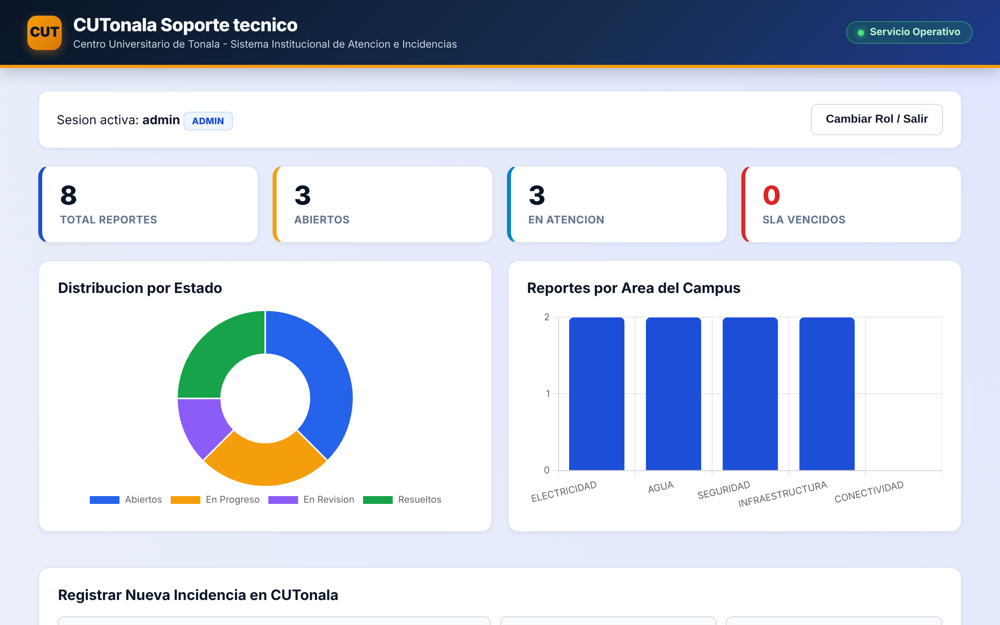

Arquitectura

3
Los reportes de fallas del campus llegan por mensajes y llamadas: sin registro, sin responsable y sin tiempos.

Qué pasa cuando un alumno reporta “Corte de energía en Edificio B” con prioridad CRÍTICA.
POST /tickets por HTTPS a la Function URL de Lambda, que valida los datos y calcula el límite del SLA (2 h).Seis servicios administrados, ningún servidor que mantener.
Sitio estático con versionado. Bucket privado de fotos con URLs firmadas y expiración a 1 año.
11 rutas REST con validación y roles. Una segunda función revisa los SLA cada 15 min.
3 tablas on-demand, índices por estado/categoría, transacciones, PITR (35 días) y TTL.
Correos de tickets críticos, SLA vencidos y alarmas del sistema.
Regla rate(15 minutes) que dispara el monitor de SLA sin un servidor con cron.
Logs JSON, 4 alarmas, dashboard y la métrica TicketsSLAVencidos.
El modelo se diseñó por patrones de acceso: ninguna pantalla recorre toda la tabla.
EstadoIndex y CategoriaIndex (ordenados por fecha) responden los filtros con Query, no con Scan: el costo de cada consulta queda acotado aunque haya miles de tickets.
El item #STATS se actualiza en la misma transacción que el ticket. Los KPIs y gráficas cuestan 1 lectura.
Si dos técnicos mueven el mismo ticket a la vez, solo uno gana (el otro recibe 409). Los avisos de SLA se envían una sola vez.
PITR para recuperar datos borrados; TTL borra la bitácora de más de un año sin costo de escritura.
Un comando crea todo; no se usa la consola web de AWS.
Idempotente: volver a ejecutarlo actualiza en lugar de duplicar, y migra despliegues anteriores.
python infra/deploy.py --email ... python infra/status.py python tests/chaos.py python infra/destroy.py python -m pytest # 22 pruebas python tests/servidor_local.py # app sin AWS
tests/chaos.py rompe componentes reales, observa, restaura y mide la recuperación.
| Si falla… | Cómo se simula | Qué hace el sistema |
|---|---|---|
| Lambda sin capacidad | Concurrencia reservada = 0 | El frontend reintenta y avisa “servicio degradado”; alarma por correo; se recupera sola |
| DynamoDB | La API apunta a una tabla inexistente | 503 con mensaje claro, sin datos a medias; /health lo detecta |
| SNS | Topic inexistente + ticket crítico | El ticket se guarda; solo se pierde el correo (degradación elegante) |
| S3 (sitio) | Se borra index.html | El versionado lo recupera en segundos, sin redeploy |
| Datos | Restauración Point-in-Time | Copia completa de la tabla a cualquier segundo de 35 días |
| Ataques | JSON roto, 1 MB, token falso, fuerza bruta | Siempre 4xx, nunca 5xx; bloqueo tras 5 intentos; anti-XSS |
| Carga | 200 peticiones simultáneas | Lambda escala sola, 0 errores |
Supuesto: 3 000 tickets, 1 500 fotos y 500 000 llamadas a la API al mes.
al mes. Lo más caro: el dashboard de CloudWatch ($3), luego DynamoDB ($2.28).
Decisiones que bajaron el costo: consultas por índice en lugar de Scan, compresión de fotos en el navegador (~10× menos), caché de URLs firmadas y TTL.
Ventajas y desventajas que encontramos.